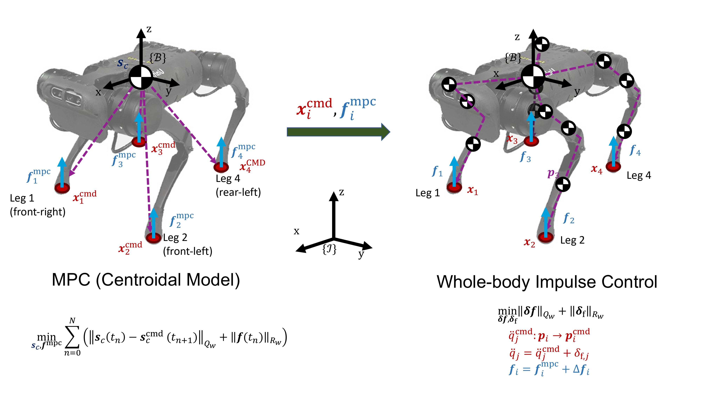
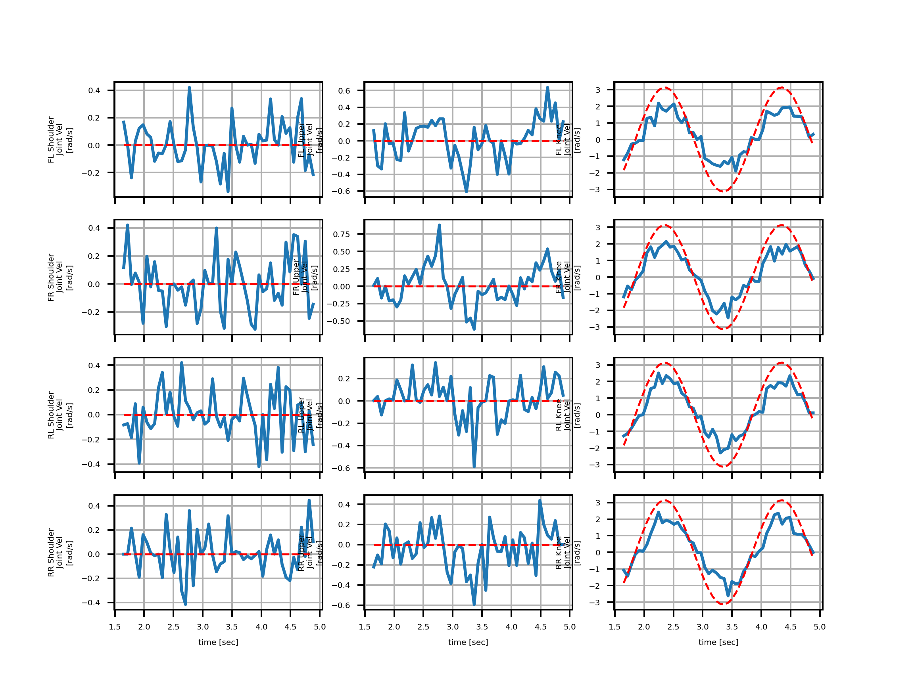
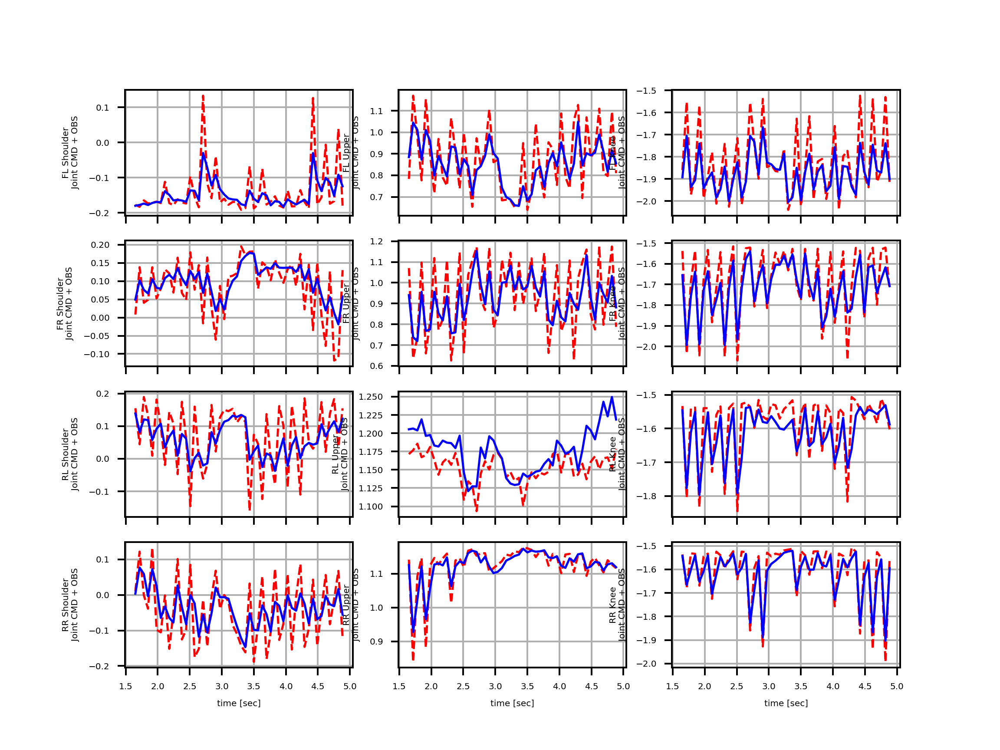
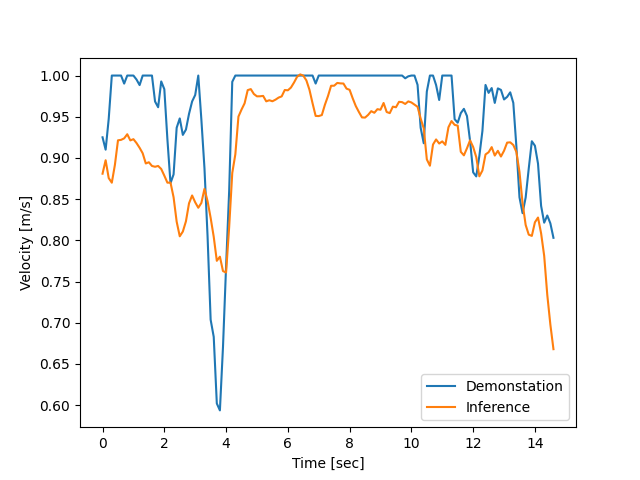
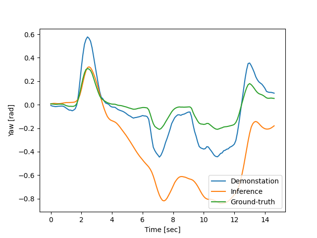

Perceptive Locomotion
Contributors: Alexy Skoutnev, Mingyo Seo, Ryan Gupta, Dr. Yuke Zhu, Dr. Luis Sentis
Objective
Integrate a learning based algorithms for better gait planning on unstructured terrain within the Unitree A1 quadrupedal robot.
Keywords
- Legged Locomotion
- Imitation Learning
- Reinforcement Learning
- Whole-body Control
Results
The legged locomotion system utilizes a hierarchical framework for terrain-aware legged locomotion. The low-level controller is based on whole-body impluse control and model predictive control for faster response time.
In previous research results, a reinforced network was trained on the gain planning module to determine its effectiveness on uneven terrain. Due to the computational limits and poor convergence within the robot's agent, imitation learning provided a alternate solution. We found that imitation learning utilizes a more robust policy by exploiting environmental information conducted by human demonstrations compared to a blind locomotion policy. The action policies conducted by the low-level controller are seen below.
 The high-level commands (yaw angle, velocity) is obtained by imitation learning, a form of supervised learning. The data for the training dataset came from a IMO sensor and a Intel RealSense Depth Camera. With imitation learning, the legged robot could successfully traverse indoor environments with obstacles and human movement. Below is a sample experiment between the robot actions (white bar) and the human actions (pink bar).
Imitation learning has the potential for quick adaption and implementation within a dynamic environment for mobile robots. The robot's navigation policy results are presented below that incorporates previous robot actions and image history.
 